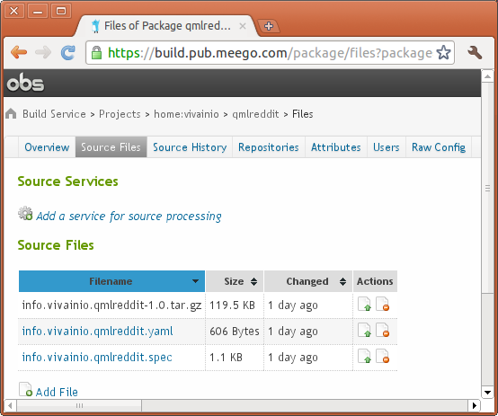

Qt creator (2.1, 2.2) creates packaging that is “almost” valid for maemo 5 and Symbian. The packaging is maintained at qtc_packaging/debian_fremantle. Qt creator does use a bit of a hacky way to create the package though, in that it builds the binary itself and only uses packaging tools to package that binary. The correct way for debian based distributions is to provide sufficient instructions to build the whole package with the instructions provided in debian/rules.
In order to be able to do a standalone build, you need to fix up debian/rules a bit:
build-stamp: configure-stamp
dh_testdir
# Add here commands to compile the package.
qmake PREFIX=/usr
$(MAKE)
#docbook-to-man debian/qmlreddit.sgml > qmlreddit.1
touch $@
Here we added the call to qmake. Cleanup needs changes as well:
clean:
dh_testdir
dh_testroot
rm -f build-stamp configure-stamp
# Add here commands to clean up after the build process.
-$(MAKE) clean
dh_clean
Here, we added minus to $(MAKE) clean, in order to prevent it croaking on the first build.
In addition to these, you need to change debian/compat to “5” instead of “7”, after which you can build your project normally in scratchbox, Remote Compiler maemo5 target (that also uses scratchbox), and extras autobuilder. Note that these changes do break normal maemo5 target builds (using madde and Qt Creator), which means you need to use remote compiler in subsequent builds.
Meego Compliance requires that third party applications have package names like <mydomain>.<myappname> (e.g. com.microsoft.office), and subsequently that application binaries are installed under /opt/<mydomain>.<myappname> (e.g. /opt/com.microsoft.office). Qt Creator 2.2, on the other hand, creates .pro file (or to be exact, qmlapplicationviewer.pri), so that it installs the packaged files under /opt/<myappname> (where <myappname> can’t contain dots). To work around that, you need to make a copy of qmlapplicationviewer.pri (e.g. to “myqmlapplicationviewer.pri”) and include it instead of the original qmlapplicationviewer.pri. Editing qmlapplicationviewer.pri directly is not recommended as it will be overwritten on qt creator upgrades.
The key change in the new applicationviewer is introduction of PACKAGENAME that is used to derive the installation directory. This is a single line change, convert:
installPrefix = /opt/$${TARGET}
To:
installPrefix = /opt/$${PACKAGENAME}
Obviously you also need to specify PACKAGENAME in your .pro file, and include myqmlapplicationviewer.pri instead of applicationviewer.pri:
PACKAGENAME = com.substanceofcode.twimgo
# Please do not modify the following two lines. Required for deployment.
include(qmlapplicationviewer/myqmlapplicationviewer.pri)
qtcAddDeployment()
OBS (OpenSuse Build System) is a web service where you upload source code, and it produces packages (rpm or deb) that get uploaded to a personal repository. You can point “zypper” to this personal repository to download files from there, or download the packages manually through the web interface.
OBS can build the sources against multiple targets - e.g. MeeGo 1.1 Netbook (x86), MeeGo 1.1 Handset (ARM, X86), or MeeGo N900 Developer Edition (ARM). Harmattan will also be provided as an OBS target.
The MeeGo community OBS sits at http://build.pub.meego.com, and you can currently get an account by requesting for one from ‘lbt’ at #meego irc channel.
To build an RPM, you need a .spec file (packaging metadata and build steps, equivalent to contents of debian/ directory) and the source code (e.g. a tarball). You upload both of these to OBS, after which OBS builds the package.
In MeeGo, the recommendation is not to build the .spec by hand, but rather use “spectacle” to generate the .spec from a simpler .yaml file. An example .yaml file looks like this:
Name: com.substanceofcode.twimgo
Summary: Twitter client
Version: 2.8.3
Release: 1
Group: Applications/Internet
License: TBD
URL: http://www.substanceofcode.com/
Sources:
- "%{name}-%{version}.tar.gz"
Description:
Twitter client
PkgConfigBR:
- QtCore >= 4.7.0
- QtGui
- QtWebKit
- QtOpenGL
Configure: none
Builder: qmake
Files:
- "/usr/share"
- "/opt"
This is converted to a .spec file by running “specify” in the directory. The reference to sources is a local .tar.gz file here, but it can also refer to a file on the internet (or even a git snapshot) that gets downloaded by “specify”.
To package for N900 Developer Edition, you need to create a target that is not available in the default selection. To accomplish this
Creating the .tar.g manually is tedious and error prone (you may accidentally include object code, temporary files and version control information). git, hg, and bzr all include a command to generate a “clean” .tar.gz from the version controlled files (bzr export, git archive, hg archive). Here’s an example script you can adapt to your needs; it simple creates the .tar.gz using git, copies the files to “obs” working directory from which they can be uploaded to OBS and runs “specify” to create the .spec file:
""" Script to generate necessary files for OBS
To get "sloppycode", do "bzr branch lp:sloppycode", and do "setup.py install".
"""
sc.ns.VER = "1.0"
sc.ns.PACKAGE = 'info.vivainio.qmlreddit'
sc.ns.OBSPRJ = sc.fpath('~/obs/home:vivainio/qmlreddit')
sc.ns.TARB = sc.fpath("${OBSPRJ}/${PACKAGE}-${VER}.tar")
sh = sc.shrun
sc.verbose = 1
with sc.chdir('..'):
sh("git archive -o ${TARB} --prefix ${PACKAGE}-$VER/ HEAD" )
sh("gzip ${TARB}")
sh('tar tf ${TARB}.gz')
sh('cp ${PACKAGE}.yaml ${PACKAGE}.spec ${OBSPRJ}')
with sc.chdir('${OBSPRJ}'):
sh('specify ${PACKAGE}.yaml')
OBS web inteface is quite friendly and convenient, and it includes the ability to edit the .spec files “in place”. It also gets annoying quite fast when you perform several rebuilds of the same project in succession. That’s why, for iterative development, you will typically use “osc”.
Osc operates like svn, so the commands should be familiar to most developers.
After installing osc (install from source recommended, at least Maverick has an obsolete version), you should should initialize osc to use meego community obs and check out your working area:
$ rm ~/.oscrc $ osc -A https://api.pub.meego.com
Your user account / password are not configured yet. You will be asked for them below, and they will be stored in /home/ville/.oscrc for future use.
Creating osc configuration file /home/ville/.oscrc ... Username: vivainio Password: done
$ osc co home:vivainio
A home:vivainio A home:vivainio/kasvopus A home:vivainio/kasvopus/com.substanceofcode.kasvopus-1.0.tar.gz
...
A home:vivainio/newsflow
...
After you have your work area checked out, you can modify these files (manually or by scripts), then run “osc ci” to “check in”, i.e. upload the changed files. After files have been uploaded, they will be automatically built at obs.
You can find reStructuredText source code for this documentation, as well as latest versions of code snippets and scripts, at https://github.com/vivainio/vvdocprj